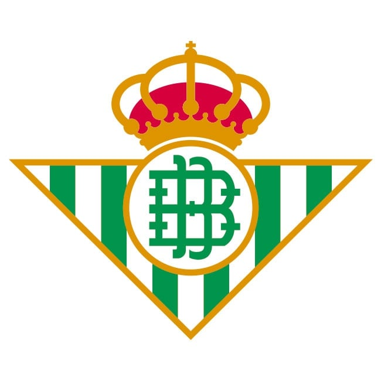

Viva er Beti
Himno
Con el arte que te sobra, con la gente que te quiere, en el tiempo y la
memoria, manque pierda blanco y verde.
Corazón que late fuerte, sentimiento que desborda, tradición que desde
siempre, es motivo de tu gloria.
Ole, ole, ole, ole Betis, olé. Ole, ole, ole, ole Betis, olé. Ole, ole,
ole Betis. Ole, ole Betis. Ole, ole, ole Betis, olé.
Tu corazón ya tiene un siglo, siente el calor de la afición que está
contigo.
Ole, ole, ole, ole Betis, olé. Ole, ole, ole, ole Betis, olé. Ole, ole,
ole Betis. Ole, ole Betis. Ole, ole, ole Betis, olé.
Eh, oe, oe. Eh oe, oe. Eh, oe, oe. Eh, oe, oe.
Mucho más que un sentimiento, un escudo, una bandera, mucho mas que todo
eso, mas allá de las fronteras. Siempre habrá alguien que diga, "Viva er
betis manque pierda", y así sonarán los sones al final de La Palmera.
Ole, ole, ole, ole Betis, olé. Ole, ole, ole, ole Betis, olé. Ole, ole,
ole Betis. Ole, ole Betis. Ole, ole, ole Betis, olé.
Tu corazón ya tiene un siglo, siente el calor de la afición que está
contigo.
Ole, ole, ole, ole Betis, olé. Ole, ole, ole, ole Betis, olé. Ole, ole,
ole Betis. Ole, ole Betis. Ole, ole, ole Betis, olé.
Tu corazón ya tiene un siglo, siente el calor de la afición que está
contigo.
Ole, ole, ole, ole Betis, olé. Ole, ole, ole, ole Betis, olé. Ole, ole,
ole Betis. Ole, ole Betis. Ole, ole, ole Betis, olé. Ole, ole, ole, ole
Betis, olé. Ole, ole, ole, ole Betis, olé. Ole, ole, ole Betis. Ole, ole
Betis. Ole, ole, ole Betis, olé. Ole, ole, ole, ole Betis, olé. Ole, ole,
ole, ole Betis, olé. Ole, ole, ole Betis. Ole, ole Betis. Ole, ole, ole
Betis, olé. Ole, ole, ole, ole Betis, olé. Ole, ole, ole, ole Betis, olé.
Ole, ole, ole Betis. Ole, ole Betis. Ole, ole, ole Betis, olé.